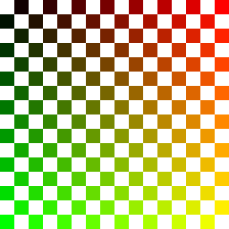

Page 14: Texture UVs
The most common way for textures to be assigned is by UV mapping. Each vertex is assigned a texture coordinate (a position in the 2D image space).
Triangles
With triangles, we can attach texture coordinates to each vertex. We can think of each vertex as having an independent coordinate in different spaces, a 3D coordinate and a texture coordinate. This lets us place the triangle to pick up its colors from any part of the texture image that we need to.
Here is a demonstration to let you place a triangle in texture space. Notice how you can make the triangle have any shape in texture space. Its contents are stretched to cover the triangle in world space. The world space shape is an equilateral triangle.
Points inside triangles
We specify the vertices. The coordinate for any point inside the triangle can be determined by barycentric interpolation: we determine the barycentric coordinates of the point, and use those values to take a weighted combination of the uv values.
Recall that with barycentric coordinates we write the position of a point in the triangle as a linear combination of the positions of the vertices:
where is the position of the point, are the positions of the vertices, and the barycentric coordinates (or weights) are values that sum to one (so ). We can then use these weights to determine how the texture coordinates are blended:
This assumes that we know the x, y, and z of the points on the triangle in 3D. In practice, when we draw the triangles, we draw them after they have been converted to screen space. The perspective projection loses the z value.
Fortunately, the process of drawing triangles can provide barycentric coordinates as it generates the pixels. However, these coordinates are in screen space. Unfortunately, this doesn’t account for perspective. A way to think about it: with linear interpolation, halfway is halfway; however, if part of the triangle is farther away, the back half will appear smaller than the front half.
There is a simple fix: rather than using barycentric coordinates on the u,v values themselves, graphics systems use barycentric coordinates to interpolate on . This is handled by the graphics hardware.
Texture Wrapping
Our texture coordinates usually stay inside of the range 0-1. However, sometimes it is convenient to let the coordinates go outside. There are three choices for how this is handled:
- Clamp to Edge Wrapping - the value at the edge is used.
- Repeat Wrapping - the texture is repeated, causing it to wrap around.
- Mirror Wrapping - the texture is repeated, but it is flipped.
You can use a different wrapping mode in each dimension. Wrapping is very useful for repeating textures.
Here is a demo with a 3x3 grid of planes. Each plane has UV coordinates that run from -1 to 2 in both dimensions and uses checkerboard_rg_gradient_256. The column picks the U wrapping mode and the row picks the V wrapping mode.
The texture is the square:

{kind=link}
Texture Use and Re-Use
Loading and storing lots of textures is expensive. They can quickly use lots of memory, which can be limited in a graphics system.
A key to effective texture use is to re-use textures as appropriate. If you have multiple objects using the same texture, load the texture once and use the same texture object for each graphics object.
A common practice is to put many different textures into a single large texture called an atlas. The idea of an atlas is that multiple objects can just use the pieces of it that they want.
Texture maps need to be rectangular. In fact, there are advantages for having texture maps be square. If the shapes of the textures are not square, this can lead to wasted space. Atlases are a solution: different shapes can be fit together into a single texture.
Textures on more complicated shapes
Creating texture coordinates for a mesh can be complicated because each vertex needs to be placed into the texture space in a way that makes each triangle cover the right area.
For some objects, there is a natural way to assign texture coordinates. For a plane (square), the shape maps naturally to the u,v square. For a cylinder, one coordinate goes around the circle, while the other goes along the length of the cylinder.
This demo shows the default texture coordinates on several Three.js primitive geometries. It gives you a sense of how the parameterizations work.
Texture coordinate strategies
There are two different approaches to getting useful texture coordinates:
- Start with an image. Then place the vertices at appropriate places in the texture space.
- Start with a “good” texture coverage of the object (such as the natural or default parameterization). Then paint the colors into appropriate places.
One concern is that textures work best when the texture coordinates are not stretched too much on the object. The closer the spaces are in terms of their shape, the better that texture mapping will work. This means at any point, the u and v directions map to orthogonal directions in the 3D space of the object, and that the distances along the two axes are similar: the amount a step in the u direction moves along the 3D object is similar to how far a step in the v direction moves.
Unfortunately, texture distortion is unavoidable. For a simple case, notice how on the sphere, the texture coordinates are more stretched out around the equator than at the poles.
Next: Page 15 - Texture Filtering